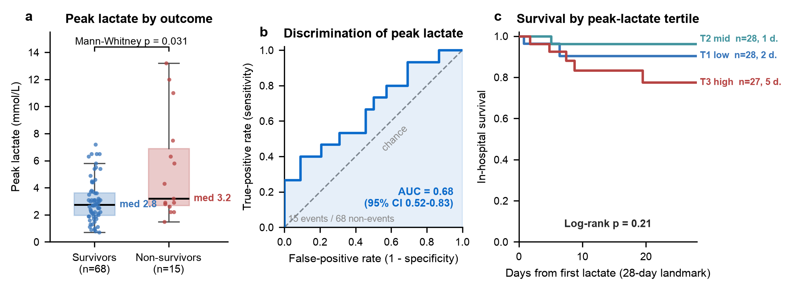
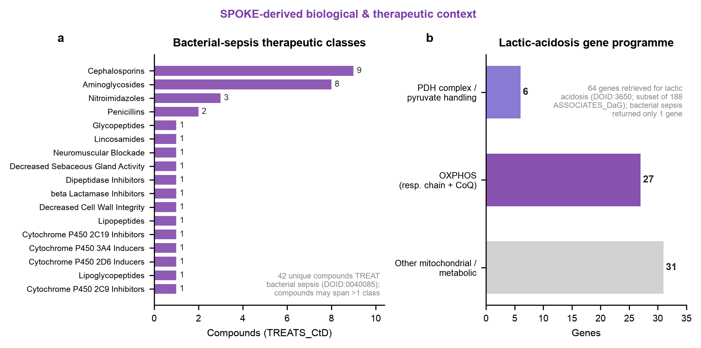

Original observational study on a synthetic dataset · MedCP (EHR) + SPOKE (knowledge graph) · Reporting standard: STROBE + RECORD (cohort) · Generated 2026-07-23
Provenance legend: EHR measured in the clinical records (via MedCP) · SPOKE derived from the biomedical knowledge graph (via MedCP).
Source study. Original study on Synthetic Dataset (no published paper is being replicated).
Question. In a critical-care cohort, is a higher blood lactate associated with in-hospital death? This is framed as an association study, not a prediction model.
Headline result EHR. Peak lactate was higher in non-survivors than survivors (median 3.2 vs 2.8 mmol/L; Hodges–Lehmann difference +1.1 mmol/L, 95% CI 0.1–3.9; Mann–Whitney p=0.031). Peak lactate discriminated death with AUC 0.68 (95% CI 0.52–0.83). Kaplan–Meier survival fell monotonically across peak-lactate tertiles at the 28-day landmark (T1 0.90, T2 0.96, T3 0.77), but the log-rank test was not significant (28-day landmark χ²=3.12, p=0.21; full follow-up p=0.67). Last lactate and lactate clearance did not differ by outcome (p=0.29, p=0.99).
Bottom line. The direction and magnitude are consistent with the well-established lactate–mortality association: elevated peak lactate marks higher in-hospital mortality risk. With only 15 deaths the study is underpowered for time-to-event inference (minimum detectable Cohen's d ≈ 0.80; minimum detectable AUC ≈ 0.73), so the non-significant log-rank is uninformative, not a refutation. No multivariate model was fitted (see §5). SPOKE supplied the biology the EHR cannot: the pyruvate/mitochondrial gene programme behind hyperlactatemia and the therapeutic landscape (antibiotics for the septic source; pyruvate-dehydrogenase–directed lactate-lowering agents).
Reporting standard: STROBE + RECORD (routinely-collected EHR data, cohort design). Reproduced verbatim per the framework's mandatory gate; undeterminable parameters are recorded as explicit assumptions, no field left blank.
| Field | Value |
|---|---|
| Citation (source study) | original study on Synthetic Dataset |
| Design of source study | original study on Synthetic Dataset — retrospective single-center critical-care cohort |
| Reporting standard applied | STROBE + RECORD (cohort) |
| Setting and calendar timeframe | Synthetic, date-shifted MIMIC-IV demo ICU (single institution, OMOP CDM); calendar time date-shifted — "original study on Synthetic Dataset" |
| Unit of analysis | Person (patient); one row per patient |
| Primary endpoint | In-hospital death (OMOP death table) |
| Primary estimand | Marginal association between peak blood lactate and in-hospital death (not a treatment/causal effect; not a prediction model) |
| Time zero (index date) | Datetime of each patient's first numeric blood-gas lactate measurement |
| Eligibility assessment window | Entire available record; eligibility = ≥1 numeric Lactate|Blood|Blood Gas result (mmol/L) |
| Baseline lookback window | Not applicable — biomarker-defined cohort (assumption: peak / last / clearance summarize the lactate trajectory; no pre-index covariate lookback used because no multivariable adjustment is performed) |
| Exposure ascertainment window | All lactate results from time zero onward. Peak = maximum; last = chronologically last; clearance = (first − last)/first × 100% |
| Follow-up start | Time zero (first lactate) |
| Follow-up end / administrative censoring | Last in-hospital contact (latest visit discharge datetime in the record). Secondary landmark analysis administratively censors at 28 days |
| Censoring: loss to follow-up | None modeled — closed demo cohort; last hospital discharge serves as the censoring time for survivors (assumption) |
| Censoring: death | Event of interest (not censored) |
| Censoring: treatment switch/discontinuation | Not applicable — no treatment exposure is studied |
| Competing risks handling | None modeled; discharge-alive is treated as censoring and in-hospital death as the sole event (assumption; acceptable for an association study). Post-discharge death cannot occur in an in-hospital endpoint |
Immortal-time / timeline checks. Follow-up begins at time zero (first lactate); no interval before time zero is counted, and the outcome (death) can only occur at or after time zero. No lookback window extends into follow-up (none is used). Timeline direction verified.
| Design element | Original study | This study (Synthetic Dataset) | Deviation / expected effect |
|---|---|---|---|
| Time zero | original study on Synthetic Dataset | First blood lactate measurement | n/a — original design |
| Eligibility window | original study on Synthetic Dataset | ≥1 numeric blood-gas lactate | ICU-biased; excludes 17 patients with no lactate |
| Exposure ascertainment | original study on Synthetic Dataset | Peak / last / clearance from all results | n/a |
| Outcome & code set | original study on Synthetic Dataset | In-hospital death, OMOP death table (15 events) | n/a |
| Follow-up start & end | original study on Synthetic Dataset | First lactate → last hospital discharge (28-day landmark for KM) | Mixed clock: 7/15 deaths occur in a later admission (see §5) |
| Censoring rules | original study on Synthetic Dataset | Discharge-alive = censor | No loss-to-follow-up modeled |
| Competing risks | original study on Synthetic Dataset | None | Acceptable for association endpoint |
| Covariates in adjustment set | original study on Synthetic Dataset | None (univariate only) | Deliberate: 15 events preclude multivariable modeling (§5) |
| Statistical model | original study on Synthetic Dataset | Mann–Whitney; Kaplan–Meier + log-rank; descriptive ROC/AUC | n/a |
Lactate|Blood|Blood Gas result in mmol/L (17 excluded: no lactate).death table. All 15 decedents are within the lactate cohort → in-cohort mortality 15/83 = 18.1%; 68 survivors.concept rows share the name Lactate|Blood|Blood Gas (ids 2000001010, 2000001241); only 2000001010 carries measurements. Linkage is via measurement_source_concept_id (the standard measurement_concept_id maps to no local concept row in this demo).Grounded sanity checks met: lactate present for 83 patients (numeric mmol/L); total deaths = 15; total persons = 100.
| Characteristic | All (n=83) | Survivors (n=68) | Non-survivors (n=15) |
|---|---|---|---|
| Age, median (IQR) — years* | 62 (52–71) | 59 (50–70) | 67 (64–75) |
| Male, n (%) | 46 (55%) | 34 (50%) | 12 (80%) |
| Lactate results per patient, median (IQR) | 5 (2–11) | 4 (2–9) | 15 (6–25) |
| Peak lactate, median (IQR) — mmol/L | 2.8 (2.1–4.1) | 2.8 (2.0–3.6) | 3.2 (2.7–6.9) |
| Last lactate, median (IQR) — mmol/L | 1.5 (1.1–2.1) | 1.6 (1.0–2.1) | 1.5 (1.3–3.1) |
| Lactate clearance, median (IQR) — % | 7 (−26–46) | 4 (−18–45) | 20 (−41–48) |
| Index-stay length (all), median (IQR) — days | 7.3 (4.8–11.5) | ||
*Age computed from year-of-birth to the index (first-lactate) year on date-shifted timelines. Non-survivors are older, more often male, and had markedly more lactate draws (a sicker, more intensively monitored group — a confounder, not an exposure).
| Metric | Result | Event counts / notes |
|---|---|---|
| Peak lactate, non-survivors (median, IQR) | 3.2 (2.7–6.9) mmol/L | n=15 deaths |
| Peak lactate, survivors (median, IQR) | 2.8 (2.0–3.6) mmol/L | n=68 survivors |
| Hodges–Lehmann location shift (dead − survivor) | +1.1 mmol/L (95% CI 0.1–3.9) | bootstrap CI, 5000 resamples |
| Mann–Whitney U (two-sided) | U=693, p=0.031 | rank-biserial r=0.36 |
| Probability of superiority (= AUC) | 0.68 | P(peakdead > peaksurvivor) |
| Descriptive ROC AUC, peak → death | 0.68 (95% CI 0.52–0.83) | 15 events / 68 non-events |
Interpretation. Peak lactate is statistically higher in non-survivors, with a moderate effect (rank-biserial 0.36; AUC 0.68). The 95% CI for the location shift excludes zero but is wide (0.1–3.9 mmol/L): the data are compatible with anything from a clinically trivial to a very large difference.
| Metric | Non-survivors | Survivors | Test |
|---|---|---|---|
| Last lactate (median) — mmol/L | 1.5 | 1.6 | MWU p=0.29 (NS) |
| Lactate clearance (median) — % | 20 | 3.6 | MWU p=0.99 (NS) |
Neither the last value nor first→last clearance separated the groups. In this synthetic demo the mortality signal sits in the peak, not in the trajectory — plausibly because most patients (survivors and decedents alike) normalize their final lactate, and clearance is noisy when the number of draws is small.
| Tertile (peak mmol/L) | n | Deaths (in index stay) | KM survival, 7 d | KM survival, 28 d |
|---|---|---|---|---|
| T1 low (0.7–2.3) | 28 | 3 (2) | 0.90 | 0.90 |
| T2 mid (2.4–3.2) | 28 | 5 (1) | 0.96 | 0.96 |
| T3 high (3.5–13.2) | 27 | 7 (5) | 0.92 | 0.77 |
Log-rank. 28-day landmark (8 in-hospital events): χ²=3.12, p=0.21. Full follow-up (all 15 events): χ²=0.80, p=0.67; T1 vs T3 χ²=0.13, p=0.72. The highest tertile has the lowest early survival (28-day 0.77 vs 0.90) and the most in-hospital deaths (5 of 8), directionally consistent with the lactate–mortality association, but the separation is not statistically significant.
No multivariate model was fitted. With only 15 events, even the ~10-events-per-variable rule of thumb permits at most one covariate; any logistic or Cox model with age, sex, severity, etc. would be overfit and its estimates unreliable. We therefore report descriptive/univariate statistics only, as specified.

The EHR returns lactate numbers and a death flag; it explains neither the biology of the elevation nor the therapeutics. SPOKE (traversed live via MedCP) supplied both. Every statement here is knowledge-graph–derived SPOKE.

TREATS_CtD bacterial sepsis (DOID:0040085): cephalosporins (9) and aminoglycosides (8) dominate, with nitroimidazoles (3), penicillins (2), and single-compound glycopeptide/lipopeptide/lincosamide and other classes; a compound may belong to more than one class.
(b) Functional grouping of the lactic-acidosis gene programme (DOID:3650): of 64 genes retrieved (subset of the 188 ASSOCIATES_DaG), 6 map to the pyruvate-dehydrogenase complex / pyruvate handling, 27 to oxidative phosphorylation (respiratory chain + coenzyme Q), and 31 to other mitochondrial/metabolic functions. By contrast the bacterial-sepsis node itself returned only 1 associated gene.The physiological state behind an elevated blood lactate is lactic acidosis (DOID:3650), which SPOKE links to 188 genes via ASSOCIATES_DaG. The gene set is dominated by the machinery of aerobic pyruvate oxidation and mitochondrial ATP production — exactly the pathway that fails in shock/hypoperfusion, forcing pyruvate→lactate:
By contrast, the specific node bacterial sepsis (DOID:0040085) carries only 1 associated gene (CTNNAL1) in this SPOKE build — a data-sparsity note, not biology (see §5).
(a) Treat the septic source. 42 compounds TREATS_CtD bacterial sepsis — an antibiotic wall spanning cephalosporins (9), aminoglycosides (8), penicillins (2), nitroimidazoles (3), plus glycopeptide/lipoglycopeptide/lipopeptide agents and a lincosamide. Named examples: Vancomycin, Piperacillin, Ceftriaxone, Cefepime, Imipenem, Metronidazole, Gentamicin, Tobramycin, Amikacin, Daptomycin, Clindamycin. Source control lowers the driver of hyperlactatemia.
(b) Lower the lactate directly. 5 compounds TREATS_CtD lactic acidosis, and they map cleanly onto the mechanism in §4.1: Dichloroacetic acid (activates pyruvate dehydrogenase → drives pyruvate into oxidation and lowers lactate), and the mitochondrial cofactors Thiamine (B1, PDH cofactor — thiamine deficiency itself causes lactic acidosis) and Riboflavin (B2). The list also flags Stavudine and Abacavir — NRTIs that cause mitochondrial lactic acidosis, a drug-safety signal the EHR lab value alone would never surface.
Sepsis symptom edges (PRESENTS_DpS) returned empty for DOID:0040085 in this build, so the clinical-picture layer could not be added from SPOKE.
Kept separate (EHR-measured physiology) EHR: the cohort (n=83), all lactate values and their peak/last/clearance derivations, the 15 in-hospital deaths, and every statistic in §2–§3. SPOKE contributed no patient-level data and none of the effect estimates — only mechanism and therapeutic context.
death table flags 15 deaths; 8 occur during the index (first-lactate) hospitalization and 7 in a later admission (median +531 days). The binary association uses all 15; the KM time axis therefore mixes index-stay and subsequent-encounter mortality — addressed by the 28-day in-hospital landmark analysis, but the full-follow-up log-rank is diluted by the late deaths.concept table. Only MIMIC-local concepts ship; linkage relied on measurement_source_concept_id.All data retrieved through MedCP (clinical SQL against the sham OMOP SQLite; SPOKE Cypher against the knowledge graph). Every query is in study-C/queries.log; raw extractions in study-C/data/*.csv and study-C/kg/*.json; all statistics in study-C/analysis.py (outputs data/results.json). Run:
uv run --with fastmcp --with neo4j python _harness/medcp_query.py --sql "<SELECT>" --out study-C/data/<f>.csv uv run --with fastmcp --with neo4j python _harness/medcp_query.py --cypher "<MATCH>" --out study-C/kg/<f>.json uv run --with pandas --with scipy --with scikit-learn --with lifelines python study-C/analysis.py
Key queries (full text in queries.log):
-- Cohort + lactate values (link via measurement_source_concept_id; 2 concept rows share the name)
SELECT m.person_id, m.measurement_datetime, m.value_as_number, m.visit_occurrence_id
FROM measurement m JOIN concept c ON c.concept_id = m.measurement_source_concept_id
WHERE c.concept_name = 'Lactate|Blood|Blood Gas' AND m.value_as_number IS NOT NULL;
-- Outcome
SELECT person_id, death_datetime FROM death;
-- SPOKE mechanism (lactic acidosis gene programme)
MATCH (:Disease {identifier:'DOID:3650'})-[:ASSOCIATES_DaG]->(g:Gene) RETURN g.name;
-- SPOKE therapeutics
MATCH (c:Compound)-[:TREATS_CtD]->(:Disease {identifier:'DOID:0040085'}) RETURN c.name; -- sepsis (42 abx)
MATCH (c:Compound)-[:TREATS_CtD]->(:Disease {identifier:'DOID:3650'}) RETURN c.name; -- lactic acidosis (DCA, thiamine…)
The exact prompt that produced this study: